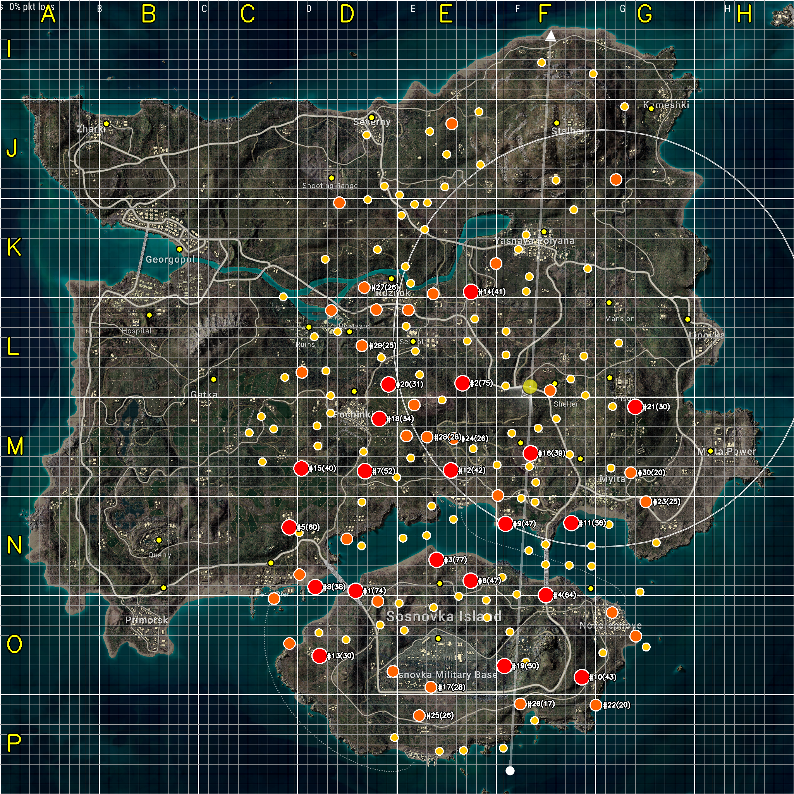

| # | 좌표 (gx, gy) | 마커 | 매치 | 영상 | Tier | 가까운 도시 | 거리 |
|---|---|---|---|---|---|---|---|
| 1 | (0.448, 0.744) | 541 | 74 | 17 | S | SosnovkaIsl | 851m |
| 2 | (0.637, 0.660) | 176 | 47 | 18 | S | Farm | 829m |
| 3 | (0.583, 0.483) | 416 | 75 | 11 | S | School | 654m |
| 4 | (0.550, 0.705) | 317 | 77 | 10 | S | SosnovkaIsl | 241m |
| 5 | (0.365, 0.664) | 405 | 60 | 11 | S | Ferry | 406m |
| 6 | (0.733, 0.853) | 157 | 43 | 15 | S | Novorepnoye | 902m |
| 7 | (0.688, 0.749) | 366 | 64 | 9 | S | Novorepnoye | 456m |
| 8 | (0.593, 0.368) | 107 | 41 | 13 | S | School | 771m |
| 9 | (0.397, 0.739) | 303 | 38 | 14 | S | Ferry | 513m |
| 10 | (0.568, 0.593) | 142 | 42 | 12 | S | Farm | 754m |
| 11 | (0.593, 0.732) | 339 | 47 | 10 | S | SosnovkaIsl | 314m |
| 12 | (0.720, 0.659) | 202 | 36 | 13 | S | Mylta | 652m |
| 13 | (0.669, 0.571) | 100 | 39 | 12 | S | Farm | 146m |
| 14 | (0.478, 0.527) | 90 | 34 | 13 | S | Pochinki | 375m |
| 15 | (0.380, 0.590) | 108 | 40 | 10 | S | Pochinki | 941m |
| 16 | (0.800, 0.512) | 75 | 30 | 13 | S | Prison | 387m |
| 17 | (0.460, 0.594) | 190 | 52 | 7 | S | Pochinki | 812m |
| 18 | (0.813, 0.632) | 87 | 25 | 14 | A | Mylta | 789m |
| 19 | (0.490, 0.484) | 82 | 31 | 11 | S | Pochinki | 355m |
| 20 | (0.459, 0.362) | 62 | 26 | 13 | A | Rozhok | 289m |
| 21 | (0.571, 0.553) | 74 | 26 | 11 | A | Farm | 679m |
| 22 | (0.625, 0.332) | 67 | 22 | 13 | A | Yasnaya | 579m |
| 23 | (0.515, 0.390) | 59 | 24 | 11 | A | School | 320m |
| 24 | (0.528, 0.901) | 68 | 26 | 10 | A | MilBase | 802m |
| 25 | (0.569, 0.156) | 65 | 21 | 11 | A | Severny | 809m |
| 영역 | zoom 배율 | 검출 도시 | 오차 | 결과 |
|---|---|---|---|---|
| 중앙 (Pochinki) | 5.6× | Rozhok, Boatyard, School | 12~150m | ✓ |
| 동쪽 (Mansion) | 4.5× | Mansion, Prison, Mylta | 193~375m | ✓ |
| 남서 (Primorsk) | 6.2× | Quarry | 155m | ✓ |
| 북동 (Stalber) | 4.0× | Kameshki, Stalber, Yasnaya | 105~155m | ✓ |
| 북서 (Zharki) | 5.0× | 0건 | — | ❌ OCR 미검출 |
4/5 성공. 사용자 목표 "확대해도 위치 알아내기" 달성. 단 1도시 OCR 실패 영역 → OCR threshold 추가 보정 또는 윤곽 매칭 보강 필요.
packages/shared/src/data/erangel-cities.ts — 27도시 + Top 50 명당 정식 데이터docs/resources/mockups/2026-05-19-city-names-v12-ingame.png — 도시 시각화docs/resources/mockups/2026-05-19-myungdang-v14-ingame.png — 명당 시각화